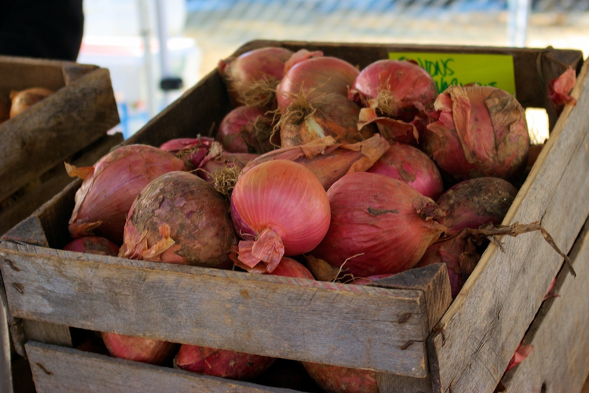

Circuit court:
On qualifie généralement de circuit court ou circuit de commercialisation le circuit de distribution dans lequel intervient au maximum un intermédiaire entre le producteur et le consommateur.
On évoque assez souvent les circuits courts pour les produits agricoles, domaine pour lequel la France dispose d'une définition officielle : selon le Ministère de l'alimentation, de l'agriculture et de la pêche, est considéré comme « un circuit court un mode de commercialisation des produits agricoles qui s'exerce soit par la vente directe du producteur au consommateur, soit par la vente indirecte, à condition qu'il n'y ait qu'un seul intermédiaire ».
En France et en 2010, les achats faits en circuit court représentent 6 à 7 % des achats alimentaires d'après l'Ademe qui estime que ces circuits courts sont « aujourd'hui une opportunité économique non négligeable que ce soit pour le producteur (sécurisation de son modèle économique), le consommateur (prix ajusté au coût réel) ou un territoire (création d'emplois locaux) ». Selon le Recensement Agricole de 2010, 21 % des agriculteurs français vendent tout ou partie de leur production en circuits courts. Si la vente directe se développe, elle ne représente encore que 12 % de la valeur des ventes en France. En agriculture biologique, la vente directe est particulièrement développée : plus d'un producteur bio sur deux vend en direct au consommateur au moins une partie de sa production.
Mais la notion de circuit court investit d'autres domaines d'activité. Ainsi, la fabrication et la distribution de matériaux (terre, chanvre, ardoise, chaux, carrières locales, etc.) en particulier pour la restauration du patrimoine bâti.
Les enjeux du développement durable évoqués notamment en France lors du Grenelle de l'environnement5 ont ravivé l'intérêt et l'urgence de la problématique des circuits courts dans la révision nécessaire des modes de production et de consommation.
(cf Wikipédia)
